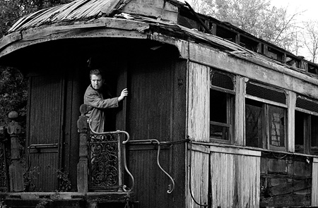

One-Way Ticket
by David Gwilym Anthony
They closed the line and just the track remains.
The miners’ railway where we used to play
in far-off summers, when I came to stay,
echoes with the ghosts of long-gone trains.
Cwm Cynfal and the Ceunant ring with wild
unchanging songs of childhood. Years away
mean nothing there. When I returned today
they called to me, and knew me as their child.
The rest is altered irretrievably.
My kin died years ago or else moved on:
no point in staying once the work was gone.
How few there are who still remember me.
My ties are broken far beyond repair:
the line is closed and just the tracks are there.

 |
|